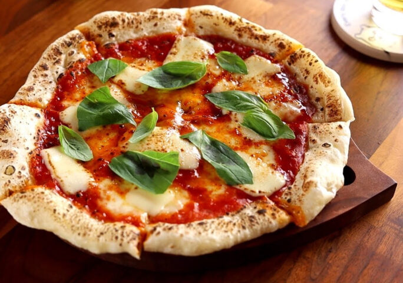

Pizza Recipe
Description
Italian cuisine includes a variety of renowned dishes, none as iconic as pizza
A flattened pice of dough, add classic tomato sauce, cheese, and whatever toppings your heart desires. What's not to love!
Ingredients
The Dough
- Cooking spray
- 1 1/4 cup lukewarm water
- 1 tbsp. granulated sugar
- 1 (1/4-oz.) packet active dry yeast (2¼ tsp.)
- 3 cups all-purpose flour
- 2 tsp. kosher salt
- 1/4 cup extra-virgin olive oil
The Pizza
- Extra-virgin olive oil, as needed
- 1/4 cup cornmeal, divided
- 1 cup marinara, divided
- 16 oz. fresh mozzarella, thinly sliced, divided
- Fresh basil leaves
Steps
- Grease a large bowl with cooking spray. In a small bowl add water and sugar and stir to dissolve, then sprinkle over yeast and let sit until frothy, about 8 minutes.
- In another large bowl, add flour, salt, and oil. Pour in yeast mixture, then mix with a wooden spoon until everything is combined and a shaggy dough begins to form. Knead against sides of bowl until dough starts to come together, then turn onto your work surface and knead, adding a pinch of flour if needed, until it feels elastic and only slightly tacky, 5 minutes. Form into a tight ball, place into prepared bowl, and cover with a clean dish towel. Let rise in a warm spot in your kitchen until doubled in size, about 1 hour and 30 minutes.
- Gently punch down dough, then divide in 2, and roll into balls. At this point, you can freeze one, or make two pizzas. Let dough balls rest as you preheat oven to 500° and grease a large baking sheet with olive oil. Sprinkle all over with 2 tablespoons cornmeal.
- On your work surface, gently flatten one ball of dough and roll with a rolling pin (or stretch with your hands) until about 12” in diameter (as thin as you can). Carefully transfer to prepared baking sheet and brush dough all over with oil. Then, add your 1/2 cup sauce to middle of dough and spread outwards with a spoon or ladle, leaving about 1” for the crust. Top with half the slices of mozzarella. Bake until crust is golden and cheese is melted, about 15 minutes.
- Top with fresh basil leaves, and a drizzle of olive oil.
- Repeat with remaining dough and toppings for second pizza.